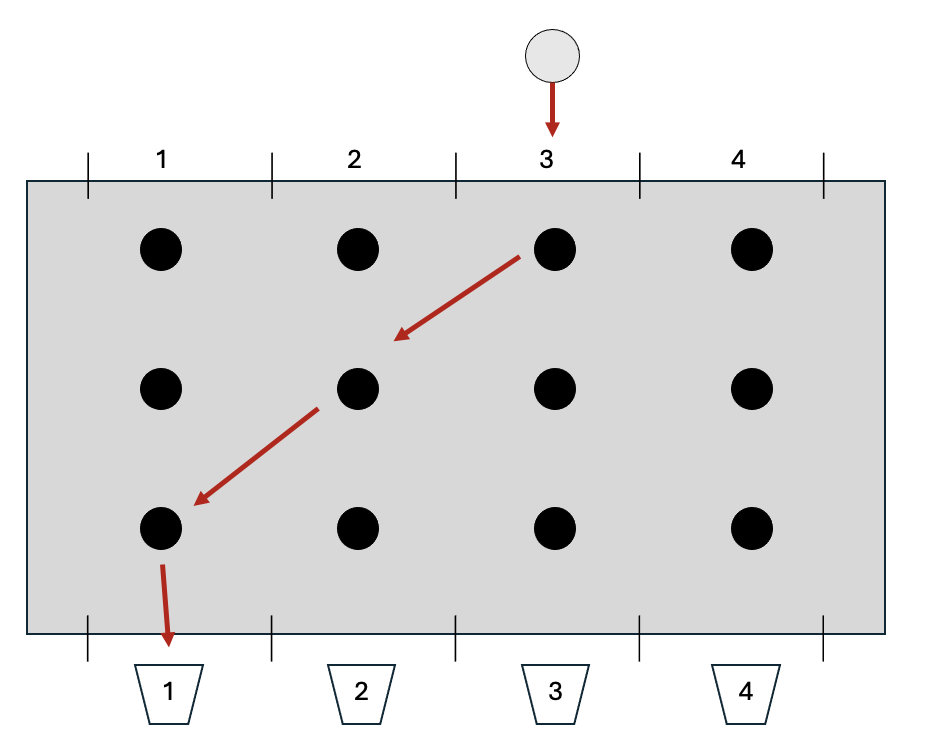
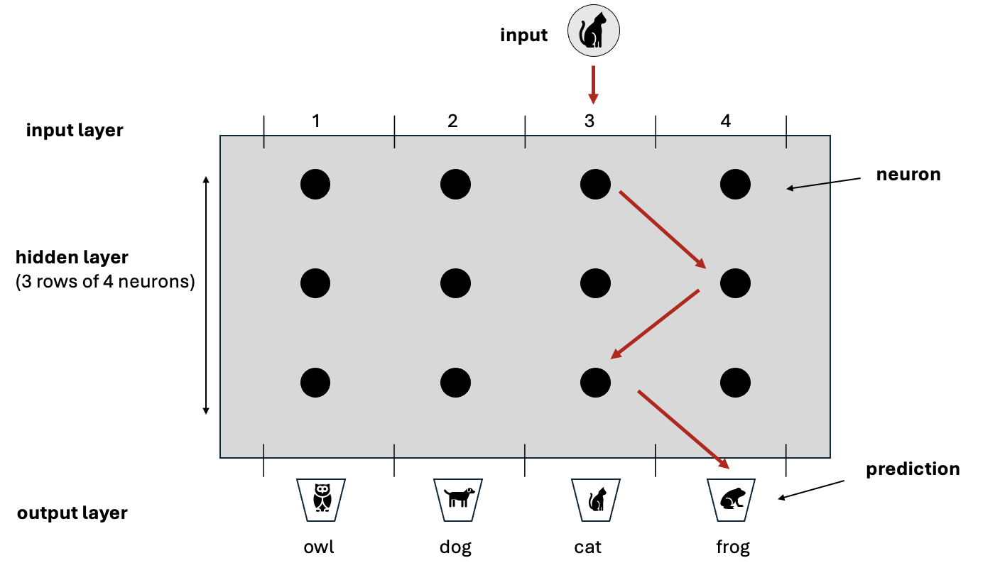
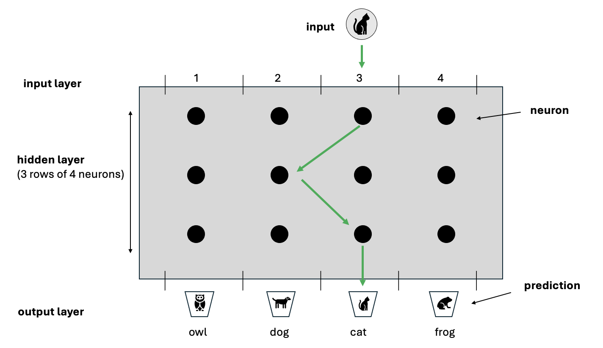

A simple introduction to Neural Networks
A conceptual explanation of how neural networks work with minimal jargon and mathematics.
Part 1
A Simple Analogy
Have you ever seen the TV game show ‘Tipping Point’?
A contestant drops a silver disc into the top of a device consisting of vertical columns arranged side by side - each column is about a metre high. For the sake of explanation, we’ll imagine there’s a bucket underneath each column with number 1, 2, 3, or 4 written on it. The silver disc is dropped into one of the columns at the top of device and makes its way down until it pops out the bottom, landing in one of the buckets. But the path through the device is blocked by a number of rods positioned at regular intervals and aligned in horizontal rows. When the disc hits a rod, it’s pushed to the left or the right. By the time it reaches the bottom, the disc could end up in a bucket to the right or left of where it was originally dropped in. The contestant is trying to get the disc to end up in a particular bucket in order to win a prize.

Extending our Analogy to Image Recognition
One of the many applications of a neural netork is image recognition whereby the network is presented with an image and must predict what’s in it. The Tipping Point game provides a useful analogy, but we’ll constrain the problem domain for the purpose of illustration. Imagine there’s an image of a cat and the network must predict which animal is in the image from a choice of 4 options - an owl, dog, cat or frog.
The silver disc represents the input image of a cat. The buckets at the bottom of the device represent the options the network must choose between (also called the predictions) and the rods represent the neurons.
The path of the disc through the device mirrors how data moves through a neural network. As the disc travels down from the top, it’s nudged by each rod until it eventually lands in a bucket at the bottom. In the same way, data representing the image of the cat enters the network and passes through layers of neurons. Rather than physically nudging a disc, each neuron performs a small calculation on the data and passes the result to the layer below - effectively a ‘virtual nudge’. By the time the data reaches the final layer, the combination of all calculations performed by all the neurons to that point produces a final result which positions the disc in one of the 4 buckets - this is the network’s prediction.

How could this ever work?
The secret to making correct predictions, is that each rod doesn’t nudge the disc by the same amount. All the rods can be tuned to nudge by different amounts. With enough rods (and a neural network has many neurons), the combination of all nudges results in the image being placed in the correct bucket.
In neural network terms, rather than physically nudging a disc, a neuron performs a simple calculation on its input data. The scale of this calculation (akin to the force a rod applies) is controlled by numbers called weights - each neuron has its own set of weights. Through a long sequence of trial and error, the weights are minutely adjusted over and over until the neurons’ calculations ‘nudge’ the data into the correct bucket. This trial and error process is what’s referred to as ‘training’.
The key to training a network is to prepare hundreds of example images where we already know what’s in each image (the correct term is that the data is labelled). In our example, training data would consist of hundreds of images of cats, dogs, owls and frogs. At the start of training, the weights associated with all the neurons are initialised with random numbers. The first image is fed into the network, each neuron performs its calculation and the final result represents the prediction of the network. Whenever the network ‘predicts’ the wrong answer, the weights of all the neurons are modified very slightly (through a process called back propagation) and the next image is fed in. Eventually the weights of each neuron become so finely tuned that the network starts to predict right almost every time (this is called convergence).
Once the network has converged, training can be deemed to have been completed and the weights are frozen. The network can now be used to predict whether an image it’s never seen before contains a cat, dog, owl or frog!

Although this example has focussed on image recognition, the process is almost identical for many different problem domains - whether it be word prediction, sentiment analysis, voice recognition etc.
Part 2
What’s happening mathematically?
Each neuron in a network performs a very simple calculation which amounts to multiplying the input it receives by its weight and then applying a factor on top - the factor is called the activation.
The weight of a neuron is just a number, assigned randomly at first and then modified through training.
The input to a layer of neurons is the output from the previous layer. The first set of neurons don’t have a predecessor, their input is a numerical representation of the item we want the network to analyse - whether that be an image, a word, a piece of audio etc. All these types of input can be represented as numbers. An image, for example, is just a set of pixels where each pixel is a number from 0 to 255 (actually, for a colour image, each pixel has 3 numbers - one for each of Red, Green and Blue (RGB). For a greyscale image, there’s only one number per pixel - ranging from 0 for white up to 255 for black)
There are various types of activation, but a simple one is called Relu which essentially performs this calculation:
If the multiplication of the input by the weight is positive, then keep that number, otherwise set the neuron’s output to zero.
Is it really that simple?
Conceptually yes, but in reality there are of course extra complexities. If you’re interested and wish to know more, read on:
Firstly, the input to a network is not a single number but a list of numbers in a specific order - called a vector. The simplest example is an image. If a greyscale image is 4 pixels across by 4 pixels down - that gives 16 pixels in total. For a greyscale image (without colour) each pixel has a number between 0 and 255 where 0 is black, 255 is white and the values in between are shades of grey. Thus a greyscale image can be represented simply as 16 numbers each from 0 to 255. Similarly a 1024 x 1024 greyscale image has 1,048,576 numbers. If that image is colour rather than greyscale, then each pixel has 3 numbers associated with it (i.e. the Red Green Blue numbers). Thus a 1024 x 1024 RGB colour image has 1,048,576 x 3 numbers ie 3,145,728 numbers. Formally, these collections of numbers are called vectors and the number of numbers is called the dimension of the vector. So for our simple 4x4 greyscale image we say the input is a vector of dimension 16.
This is important because neurons don’t actually have a single weight - they have many weights. Each neuron in the first layer has a weight for each dimension of the input. Each neuron in subsequent layers has a weight for each of the neurons in the layer before it. The number of weights can therefore explode - AlexNet developed in 2012 was trained on over 1,000,000 images, each of 224x224 pixels, it had over 650,000 neurons in 8 layers and a total of over 60,000,000 individual weights!!!!
The mathematical operation that each neuron performs consists of two parts - The first part is a multiplication (called the vector dot product) - whereby each element of input vector is multiplied by its corresponding weight and the results are added up. The second part is called an activation function - common examples are tanhh, sigmoid and Relu. The Relu activation function is the simplest - it just sets the result of the neuron’s calculation to 0 if the previous step returned a negative number, otherwise it returns the result of the previous step as-is
The final output of the network is also a vector - the dimension of this vector is the same as the number of possible outcomes. So if the network has to classify an image as one of 4 types of animals the output vector will be of dimension 4.
The network is constructed so that the all values in the output vector are between 0 and 1 and that they in total add up to 1 (e.g. [0.2, 0.4, 0.1, 0.3]. This has the effect of providing a probability distribution for each possible outcome. There is a special calculation at the final step of the network which converts the output of the last layer of neurons to a probability (called the Softmax function)
Remember that in training we know what’s in all the images. If there are images of 4 types of animals we will assign each type of animal to one of the elements in the output vector. Thus we might have 0: cat 1: dog 2: owl 3 :frog. For example, a frog would be represented by [0,0,0,1] and a cat by [1,0,0,0]
So, I the network outputs a vector [0.2, 0.4, 0.1, 0.3] we can correspond that to the network thinking with 40% certainty that the image it has been provided with is a dog (as position one has a value of 0.4) and with 30% certainty that its a frog. If in fact the image is a cat well, the network was only 20% certain that the image was a cat - thus its’ way off the mark - this is key to updating the weights
To tune the network, the output is compared to the correct answer to work out how ‘wrong’ the network was - this is called the ‘loss’ of the network. It’s calculated via a process called cross-entropy loss and then this loss is used to update all the weights in the network. The larger the loss the bigger the adjustment to the weights!
The mechanism and amount by which each of the weights are updated is based upon high-school differential calculus in a process called back-propagation. We won’t go into that here, but you can imagine it to provide a way of attributing the loss to neurons depending upon the amount their weights influenced the answer the network provided
A simple introduction to Neural Networks – Patrick Lowry A simple introduction to Neural Networks – Patrick Lowry A simple introduction to Neural Networks – Patrick Lowry Patrick Lowry